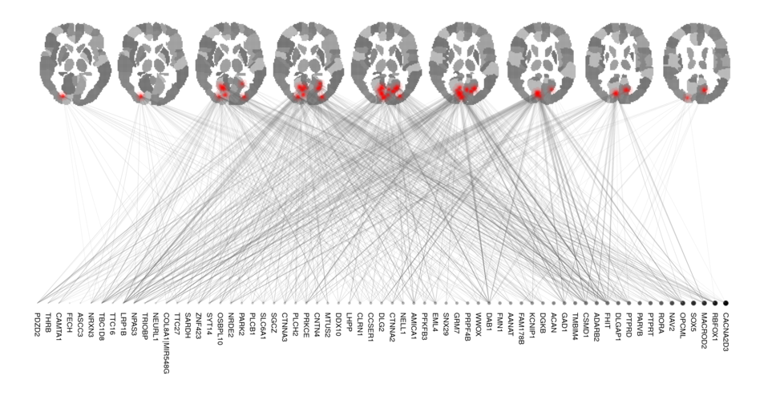

Regaining control of false findings in feature selection, classification, and prediction on neuroimaging and genomics data
A PhD prospectus presentation for the Bioinnovation PhD Program at Tulane University.
Alexej Gossmann
March 12, 2018
Precision Medicine
Inter-personal diversity in the patients' biology
⇾ differences in disease susceptibility/progression
⇾ differences in treatment efficacy
⇾ "personalized" treatment plans.
Precision Medicine
- New drugs and devices targeting specific subpopulations (or even individuals).
- No more treatment based on trial-and-error.
- ↑ Quality of healthcare
- ↓ Treatment time and cost.
Precision Medicine
Made possible by:- Big data including genomics and neuroimaging.
- Computational methods including machine learning and modern statistics.
Precision Medicine & Mental Disorders
Heritability of mental disorders. Neuroimaging as an endophenotype, e.g., use of fMRI to monitor & guide drug treatment [Weickert et al., 2004, Apud et al., 2007,Goldstein-Piekarski et al., 2016].

Source: Images by Thomas Shafee [CC BY 4.0] via Wikimedia Commons.
.gif)

From left to right: (1) Animation by Dwayne Reed at English Wikipedia [CC BY-SA 3.0] via Wikimedia Commons. (2) T1-weighted MRI of a randomly chosen subject from the Philadelphia Neurodevelopmental Cohort, before preprocessing, $192\times 256 \times 160$ voxels.(3) fMRI of the same subject at a fixed time point, after preprocessing, $79\times 95\times 79$ voxels measured at $>200$ time points.
.gif){kind=link}
Resources and collaborators
- The Multiscale Bioimaging and Bioinformatics Laboratory (MBB) at Tulane University
- Tulane Center for Bioinformatics and Genomics (CBG)
- FDA, Office of Science and Engineering, Division of Imaging, Diagnostics, and Software Reliability
- Other: The Mind Research Network, University of Wrocław, Indiana University Bloomington, University of Tennessee Health Science Center.
Parts of this work apear in:
- G.A., Cao, S., & Wang, Y.-P. In proceedings of ACM BCB '15. 2015.
- G.A., Cao, S., Brzyski, D., Zhao, L. J., Deng, H. W., & Wang, Y. P. IEEE/ACM TCBB. 2017.
- Brzyski, D., G.A., Su, W., & Bogdan, M. JASA. 2018.
- G.A., Zille, P., Calhoun, V., & Wang, Y.-P. IEEE TMI. 2018.
- G.A., Pezeshk, A., & Sahiner, B. In proceedings of SPIE Medical Imaging '18. 2018.
Regression Models
$$y = f(x\subscript{1}, x\subscript{2}, \ldots, x\subscript{p}) + \varepsilon,$$ where $x\subscript{1}, x\subscript{2}, \ldots, x\subscript{p}$ are predictor variables (DNA mutations, brain activations, age, gender, etc.), $\varepsilon$ is random noise, and $y$ is the phenotype.
Human DNA $\approx 3\cdot 10^9$ bp ⇝ vast majority not related to phenotype of interest ⇝ sparse models $$\Rightarrow y = f(x\subscript{a\subscript{1}}, x\subscript{a\subscript{2}}, \ldots, x\subscript{a\subscript{m}}) + \varepsilon,$$ where $\{a\subscript{1}, a\subscript{2}, \ldots, a\subscript{m}\} \subset \{1,2,\ldots,p\}$ is a small subset ($m \ll p$).

The two-faced model selection problem
Prediction: Feature selection:
Find best predictions for $y$. Which $x\subscript{j}$ are predictive?
Two types of false findings
False positives. False discoveries.
Overfitting. Curse of dimensionality.
Multiple hypotheses testing
Alternatively, feature selection can be regarded as testing the $p$ hypotheses $$H\subscript{i} : \beta\subscript{i} = 0, \quad i = 1,\ldots,p.$$
- $R := $ number of rejected hypotheses
- $V := $ number of false rejections (i.e., Type I errors).
- Family-wise error rate: $\mathrm{FWER} = \mathbb{P}(V \geq 1)$. E.g., Bonferroni, Holm (1979), Hommel (1988).
- False discovery rate: $\mathrm{FDR} = \mathbb{E}\left( \frac{V}{\min\{R, 1\}} \right)$. E.g., Benjamini-Hochberg (1995), Benjamini-Yukutieli (2001).
Group SLOPE Motivation
- Divide the data into groups by correlation.
- Then select/drop entire groups rather than individual variables.
- Redefine FDR w.r.t. groups: gFDR.
Group SLOPE
- $\mathbf{y} = X\boldsymbol{\beta} + \boldsymbol{\varepsilon}$, $X\in\mathbb{R}^{n\times p}$, $\boldsymbol{\beta}\in\mathbb{R}^p$, $\boldsymbol{\varepsilon}\sim\mathrm{N}(0, \sigma\subscript{\varepsilon}^2 I)$.
- $\boldsymbol{\beta}$ divided into $J$ groups of sizes $p_1, p_2, \cdots, p_J$, i.e. $\boldsymbol{\beta} = (\boldsymbol{\beta}_1^T, \boldsymbol{\beta}_2^T, \ldots, \boldsymbol{\beta}_J^T)^T$ with $\boldsymbol{\beta}_i \in \mathbb{R}^{p_i}$.
$$\min\subscript{\mathbf{b}\in\mathbb{R}^p} \frac{1}{2} \left\lVert\mathbf{y} - X\mathbf{b}\right\rVert\subscript{2}^2 + \sum\subscript{i=1}^J \lambda\subscript{i} \sqrt{p\subscript{(i)}}\left\lVert X\subscript{(i)} \mathbf{b}\subscript{(i)}\right\rVert\subscript{2},$$ where $\sqrt{p\subscript{(1)}}\left\lVert X\subscript{(1)} \mathbf{b}\subscript{(1)} \right\rVert\subscript{2} \geq \sqrt{p\subscript{(2)}}\left\lVert X\subscript{(2)} \mathbf{b}\subscript{(2)} \right\rVert\subscript{2} \geq \ldots$
Group SLOPE - Theoretical guarantees
- Given a user-specified $q \in (0, 1)$, we provide several procedures to select $\boldsymbol{\lambda}$, such that
$$\mathrm{gFDR} \leq q,$$
[Gossmann et. al., 2015], [Brzyski, Gossmann, et. al., 2018] and [Gossmann et. al., 2018].
Confirmed with extensive simulation studies on synthetic and real data (not shown). - Optimality in estimation (asymptotically minimax [Brzyski, Gossmann et. al., 2018]).
Application - Framingham Cohort
- SNP data for 8915 subjects.
- 1771 subjects have corresponding spine BMD measurements.
- The remaining ~7000 subjects used to group SNPs.
$X$ with dimensions $1771 \times 117933$, consisting of 6403 groups of average size 18.42 (median size 2).
Canonical Correlation Analysis
Classical canonical correlation analysis
$$\mathrm{maximize}\subscript{u\in\mathbb{R}^p, v\in\mathbb{R}^q} \widehat{\mathrm{Cov}}(Xu, Yv) = \frac{1}{n} u^T X^T Y v,$$ $$\mathrm{subject\,to} \quad \widehat{\mathrm{Var}}(Xu) = 1, \widehat{\mathrm{Var}}(Yv) = 1.$$ [Hotelling, 1936]
The problem is degenerate if $n \leq \mathrm{max}\left( p, q \right)$.
Sparse CCA
$\mathrm{maximize}\subscript{\mathbf{u}\in\mathbb{R}^p, \mathbf{v}\in\mathbb{R}^q} \frac{1}{n} \mathbf{u}^T X^T Y \mathbf{v},$
subject to
$\lVert \mathbf{u} \rVert_2^2 \leq 1, \lVert \mathbf{v} \rVert_2^2 \leq 1, \lVert \mathbf{u} \rVert_1 \leq c_1, \lVert \mathbf{v} \rVert_1 \leq c_2$.
[Witten et. al., 2009], [Parkhomenko et. al., 2009]
- Unique solution even when $p_X, p_Y \gg n$.
- Selection of the sparsity parameters remains a challenging problem.
Sparse CCA
Select sparsity parameters in a data-driven fashion, such that FDR is controlled.
⇾ False discovery proportions: FDP(u) = 1/3 and FDP(v) = 1/4. ⇾ FDR = E(FDP).
SlopeCCA:
$\mathrm{minimize}\subscript{\fatu\in\R^p, \fatv\in\R^q}\, \left\{ -\fatu^T X^T Y \fatv + \sqrt{n} J\subscript{\fatlambda^u}(\fatu) + \sqrt{n} J\subscript{\fatlambda^v}(\fatv) \right\}$,
subject to $\lVert\fatu\rVert\subscript{2}^2 \leq 1, \lVert\fatv\rVert\subscript{2}^2 \leq 1$.
gSlopeCCA:
$\mathrm{minimize}\subscript{\fatu\in\R^p, \fatv\in\R^q} \left\{ -\fatu^T X^T Y \fatv + \sqrt{n} J\subscript{\fatlambda^u}\left( \left( \lVert \fatu\subscript{1} \rVert\subscript{2}, \dots\right)^T \right) + \sqrt{n} J\subscript{\fatlambda^v}\left( \left( \lVert \fatv\subscript{1} \rVert\subscript{2}, \dots \right)^T \right) \right\}$, subject to $\lVert\fatu\rVert\subscript{2}^2 \leq 1, \lVert\fatv\rVert\subscript{2}^2 \leq 1$.
Where $J\subscript{\fatlambda}(\fatu) = \Sigma\subscript{i=1}^p \lambda\subscript{i} |u|\subscript{(i)}$ is the Sorted L1 Norm.
SlopeCCA and gSlopeCCA - theoretical guarantees
Asymptotic FDR guarantees if $Cov(X)$ and $Cov(Y)$ are block-diagonal.
($Cov(X, Y)$ can be of arbitrary shape)
Application example: Results of gSlopeCCA applied to methylation and mRNA data from 12 diseases available from the Cancer Genome Atlas data.
FDR-corrected sparse CCA
A split-sample, two-step procedure:
- Split the data in two parts.
- Using the first subsample: obtain initial estimates $\hat{\fatu}^{(0)}$ and $\hat{\fatv}^{(0)}$ using conventional sparse CCA.
- Using the second subsample: test hypotheses of the form, $$\mathrm{H}^{(u)}\subscript{i} : u\subscript{i}^{(0)} = 0, \quad \mathrm{H}^{(v)}\subscript{j} : v\subscript{j}^{(0)} = 0,$$ and adjust for multiple comparisons to control the FDR.
FDR-corrected sparse CCA - Theoretical Guarantees
- Equivalence to hypotheses: $$\mathrm{H}^{(u)}\subscript{i} : \left(X^T Y \hat{\fatv}^{(0)}\right)\subscript{i} = 0, \quad \mathrm{H}^{(v)}\subscript{j} : \left(Y^T X \hat{\fatu}^{(0)}\right)\subscript{j} = 0,$$
- After approximating the distribution of $X^T Y \hat{\fatv}^{(0)}$, we can use Benjamini-Hochberg to control FDR.
Confirmed with extensive simulation studies on synthetic and real data (not shown).
Dataset
The Philadelphia Neurodevelopmental Cohort (PNC) is a large-scale collaborative study between the Brain Behaviour Laboratory at the University of Pennsylvania and the Children's Hospital of Philadelphia. It contains, among other modalities, a fractal $n$-back fMRI task, an emotion identification fMRI task, and SNP arrays for over 900 adolescents.
Objective
Use sparse CCA to identify the relationships between brain activity, brain connectivity, and genomics.
- Diversity in brain activity and brain connectivity in children and adolescents
- What are the driver genes?
- Relationship to neurodevelopmental and psychiatric disorders.
- Increased (prodromal) symptoms of ADD (107 PNC subjects), schizophrenia (103 PNC subjects), and depression (85 PNC subjects) [Kaufmann et. al., 2017].
n-back fMRI vs. SNPs
Data after preprocessing: $85796$ brain voxels, $60372$ genomic features.
Results validation - n-back fMRI vs. SNPs
- Similar brain regions have been found in other fMRI studies of working memory.
- At least 34 out of the 65 identified genes have been previously associated with various aspects of human cognitive function.
Functional connectivity (FC) vs. SNPs
- Emotion identification task fMRI data transformed to FC measures.
- FDR-corrected sparse CCA solution includes 129 genomic features and 107 FC features.
FC vs. SNPs - Top 10 selected genes
| Gene | Previously studies in association with... |
|---|---|
| DAB1 | Autism, schizophrenia, brain development |
| NAV2 | Brain development |
| WWOX | Cognitive ability, brain development |
| CNTNAP2 | Autism, brain connectivity, brain development, schizophrenia, major depression, cognitive ability (linguistic processing) |
| NELL1 | Brain development |
| PTPRT | Brain development |
| FHIT | Cognitive ability, autism, ADHD |
| MACROD2 | Autism |
| LRP1B | Cognitive function |
| DGKB | Brain development, bipolar disorder |
(for detail see [Gossmann et. al., TMI, 2018])
Another type of false findings
Feature selection with FDR control.
Features can be used to fit a predictive model.
Danger of over-fitting to the local noise in the given dataset, resulting in false predictions on new data.
What to do?
In Machine Learning practice, generally, usage of two independent datasets — "training" and "test" data.
Training data: exploratory analysis, model fitting, parameter tuning, comparison of different machine learning algorithms, feature selection, etc.
$\Longrightarrow$ Adaptive machine learning, risk of overfitting.
Test data: Performance evaluation after the trained machine learning algorithm has been "frozen".
$\Longrightarrow$ Accurate performance measures of the final model, if the test data is used only once.


Idea
Can we obfuscate the test data to avoid overfitting?
Differential privacy [Dwork, McSherry, Nissim, Smith, 2006].
Promising simulation results [Dwork et. al., Science, 2015], [Gossmann et. al., SPIE 2018].
Next:Test the method on real neuroimaging data.